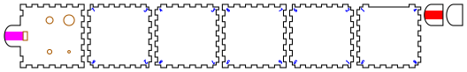

Four-hole ocarinas
Four-hole ocarinas in 3mm plywood, each a solid finger-jointed on every edge at whatever angle its faces meet: four Platonic solids (the cube, the octahedron, the dodecahedron and the icosahedron), two Archimedean ones (the truncated octahedron and the cuboctahedron), two uniform prisms (hexagonal and octagonal) and a square antiprism. Each has a beak to blow into, a window, four finger holes and the English fingering, which gets a whole octave out of four holes.
All nine take the same window, holes and fingering, so every interval is the same; only their cavities differ, and with them the key. Seven hold 279 to 283cm³ and play near D4; the cuboctahedron, made a little bigger so its top takes the holes, holds 303cm³ and plays C♯4, and the octagon 354cm³ and C4. From the closed note the fingerings below give the major scale up an octave, and three of the five notes between that the scale leaves out.
Output is millimetre-true — 1 user unit = 1mm with a physical width/height — so it prints and cuts at real size.
No build has been cut or played yet. The cavity and the holes come from an acoustic model whose window term is not measured, and the first one cut will set it. Before you cut says what that means for the first build.
 |
| cube · the whole ocarina on one 525 × 82mm sheet |

Built for LaserMadeMusic.
The rest of the build files — every instrument, generator and tool, indexed.
The builds
Nine builds, every one a solid, each playing in whatever key its cavity holds.
| Build | Construction | Cavity | Key, all closed | Body | Parts | Sheets |
|---|---|---|---|---|---|---|
cube |
cube, finger-jointed on all 12 edges | 280cm³ | D4 −12 cents, 291.7Hz | 71.4 × 71.4 × 71.4mm | 8 | 1 |
octagon |
uniform octagonal prism, finger-jointed on all 24 edges | 354cm³ | C4 −16 cents, 259.3Hz | 110 × 110 × 45.6mm | 12 | 1 |
square-antiprism |
square antiprism, finger-jointed on all 16 edges | 279cm³ | D4 −7 cents, 292.4Hz | 101.8 × 101.8 × 60.5mm | 12 | 1 |
octahedron |
regular octahedron, finger-jointed on all 12 edges | 281cm³ | D4 −14 cents, 291.2Hz | 105.7 × 91.5 × 74.7mm | 10 | 1 |
dodecahedron |
regular dodecahedron, finger-jointed on all 30 edges | 283cm³ | D4 −21 cents, 290.1Hz | 99.1 × 94.2 × 80.2mm | 14 | 1 |
truncated-octahedron |
truncated octahedron, finger-jointed on all 36 edges | 283cm³ | D4 −19 cents, 290.4Hz | 94.8 × 94.8 × 89.4mm | 16 | 1 |
hexagonal-prism |
uniform hexagonal prism, finger-jointed on all 18 edges | 282cm³ | D4 −16 cents, 290.9Hz | 90.1 × 104.0 × 52.0mm | 10 | 1 |
icosahedron |
regular icosahedron, finger-jointed on all 30 edges | 282cm³ | D4 −16 cents, 290.9Hz | 101.8 × 88.2 × 82.4mm | 22 | 1 |
cuboctahedron |
cuboctahedron, finger-jointed on all 24 edges | 303cm³ | C♯4 +20 cents, 280.3Hz | 109.0 × 109.0 × 77.1mm | 16 | 1 |
The bird and the chin layer are glued, and the rest is press-fit.
The body is length × width × height, the prisms' length across their flats; the beak runs 18mm past it at the mouth end, the bird stands 3mm on the top over it, and the chin layer hangs 3mm under it.
- The cube is six 71.4mm squares, ten or eleven fingers to an edge, sized so that its cavity, 65.4mm on a side, holds 280cm³, as the octahedron does. The top and bottom own the corners, and the window and the four holes are on the top. Under the beak the face below sends no fingers up into the top, so the beak runs on from solid ply and the duct crosses no seam; every build does the same. Until 2026-10-18 the G4 build was a long box, 60 × 18mm inside and as long as the volume needed, finger-jointed or glued up as a laminated stack. At the 14 × 7mm window it ran 144mm, 157mm corner to corner inside against a quarter wavelength of 221mm, close enough that it would start to act like a tube. So the box became a cube, at first sized to G4, then the same day to 280cm³; the stack went, and every build is a regular or uniform solid.
- The octagon is a uniform octagonal prism, 110mm across the flats and as tall as a wall is wide, 45.6mm: two regular octagons, top and bottom, and eight 45.6mm squares. It was 36mm tall until 2026-10-18, a prism but not a uniform one. It holds the most air, so it plays lowest, C4. The walls meet each other at 135 degrees with six fingers to an edge, and the top and bottom at 90 with seven; the top and bottom own the corners. The holes and the window are in the top, the beak runs out from the middle of one wall's top edge, and that wall sends no fingers up into the top, as on the cube.
- The square antiprism is two 72mm squares, top and bottom, a quarter turn apart, and eight equilateral triangles between them, 60.5mm tall. Squares meet triangles at 103.8 degrees with eleven fingers to an edge, and triangles meet each other at 127.5 with twelve. The window and the holes are on the top square, on the cube's grid. The triangle under the beak slopes away beneath it, so it stops 3.1mm short of the top there, clear of the beak's underside, and the chin layer is cut 1.5mm shorter to clear the slope.
- The octahedron stands on one of its eight equilateral triangles, every edge 91.5mm, every joint at 109.5 degrees with fourteen or fifteen fingers. The edge is sized for about 280cm³; it was 72mm and 127cm³, a fifth higher, until 2026-10-18. Its top triangle is too small for four holes and the window, so it carries only the window, and each hand has a triangle of its own: the two that slope away from the top on either side, with the index finger's hole nearer the beak and both holes placed as far from the triangle's walls and from each other as they will go. The triangle under the beak stops 3.2mm short there, and the chin layer is 2.1mm shorter.
- The dodecahedron stands on one of its twelve regular pentagons, every edge 36mm, every joint at 116.6 degrees with five or six fingers. The top pentagon carries the window, and each hole has a pentagon of its own, where it is furthest from that pentagon's walls: the index fingers on the two either side of the mouth's pentagon, the middle fingers on the next two round. The pentagon under the beak stops 3.4mm short there, and the chin layer is 3.0mm shorter.
- The truncated octahedron stands on one of its six squares, every edge 31.6mm, with four or five fingers to an edge. Squares meet hexagons at 125.3 degrees and hexagons meet each other at 109.5; three plates meet at every corner, so the corners close. The top square is too small for more than the window, so each hand has the hexagon on its side of it, both holes on the one face, the index finger's nearer the beak. The hexagon under the beak stops 3.7mm short there, and the chin layer is 4.2mm shorter.
- The hexagonal prism is uniform, as the octagon is: two regular hexagons and six 52mm squares, 90.1mm across the flats and 52mm tall. The walls meet each other at 120 degrees with eight fingers to an edge, and the top and bottom at 90 with seven. The window and the holes are in the top, on the cube's grid, and the beak runs out from the middle of one wall's top edge.
- The icosahedron stands on one of its twenty equilateral triangles, every edge 54.5mm, every joint at 138.2 degrees with eight or nine fingers. Five plates meet at each corner. Its top triangle carries the window, and each hole has a triangle of its own, two on each side, the index finger's nearer the beak. The triangle under the beak stops 4.5mm short there, and the chin layer is 6.7mm shorter.
- The cuboctahedron stands on one of its six squares, every edge 54.5mm, every joint at 125.3 degrees with eight or nine fingers. Four plates meet at each corner, as on the antiprism and the octahedron. The window and the holes are on the top square, on the cube's grid. Near 280cm³, at a 53.5mm edge, its top left 1.3mm of ply between the biggest hole and a wall, under the 1.5mm the generator asks for; at 54.5mm and 303cm³ it leaves 2.3mm, enough to file that hole up by the millimetre allowed. The triangle under the beak stops 3.7mm short there, and the chin layer is 4.2mm shorter.
How the solids' fingers go together. Where two plates meet at an angle wider than 90 degrees, a plate's finger reaches the outside edge, and in its neighbour's finger it stops short by 3mm × sin of the angle: 2.12mm at 135 degrees, 2.83mm at 109.5, 2.00mm at the icosahedron's 138.2. That is the least that keeps the two plates out of each other, and it leaves the joint closed along a line, with a shallow V-shaped notch outside each finger and a small void at each corner. The shellac fills both.
Where four or five plates meet. At a corner of the square antiprism, the octahedron or the cuboctahedron, two of the four plates share only the corner, and no edge, and run into each other just inside it; on the icosahedron five meet, and each shares only the corner with two. So every plate's corners there are cut off square to the corner's bisector: 4.25mm in from the corner on the antiprism, 4.75mm on the octahedron and 3.5mm on the cuboctahedron and the icosahedron, where the least that clears, found by scanning the corners in 3D, was 3.75, 4.25, 3.0 and 3.0mm. That leaves a hole at every such corner, open on the outside up to about 6mm in from the point on the antiprism and the octahedron. Shellac will not bridge it: fill each with glue or wood filler before sealing. On the cube, the two prisms, the dodecahedron and the truncated octahedron, where three plates meet and every pair shares an edge, the corners close on the outside.
Plates of one shape, the triangles of the antiprism, the octahedron, the icosahedron and the cuboctahedron, the dodecahedron's pentagons, and the squares and hexagons, look alike but are not: each has its own pattern of fingers, set by which corners are whose, so each goes in one place only. Every corner of a solid has a number, and every plate carries it near each of its own corners: three numbers on a triangle, four on a square, five on a pentagon, six on a hexagon. The plates that meet at a corner all show its number, so the solid goes together by matching them. The 3D view labels every plate's corners with them (the Corner numbers box turns them off); pulled apart, it shows each plate with its own. The top plate is the one plate left unnumbered: it carries half the duct on its outside face, so it is drawn outside face up, and the beak, the window and the holes already place it. Every corner it touches is numbered on the plates that meet it there. The corners are numbered from the top down, 1 at the top plate's corner beside the beak on the right hand's side. Each number is engraved in single lines on the plate's inside face, where the finished ocarina hides it, 4mm tall, its top toward its corner, and set in until it clears the joints, the holes and the window by 1mm.
Against Boxes' polyhedra. Boxes has a Platonic generator, in its Unstable group, for the tetrahedron, cube, octahedron, dodecahedron and icosahedron. It cuts every face the same, with one finger edge on every side, its fingers shifted off-centre so that an edge mates with a copy of itself turned end for end, and every finger a full plate thickness deep, as at 90 degrees, whatever angle the faces meet at. Here each edge is cut for its own angle, each corner is given to one plate, and so the plates differ; in exchange the fingers step back 3mm × sin of the angle, the joints close on the outside, and the corners are checked in 3D. Boxes does not make the prisms, the antiprism or the two Archimedean solids.
None of the builds has anything to slide, so all are tuned at the window and the holes.
All nine carry the same mouthpiece: the top plate runs on past the body as a beak 24mm wide. One layer, the bird, is glued over it and one, the chin layer, under it, so the mouthpiece is three plies, 9mm thick, with the duct near its middle. The duct is 14mm wide, the window's width, and runs from the beak's tip to the window. Only the bird is needed for the sound; the chin layer gives the lips a thicker mouthpiece and stiffens the beak. The tip, where the lips close, is a half-ellipse across the beak's full 24mm and 8mm deep, cut the same on all three plies so they round off as one, and the duct's mouth follows the curve.
The duct is drawn as a savanna flue, in two colours, so you choose at the laser. The square flute names its flues for where they are carved: a bird flue in the underside of the block, the woodland style; a nest flue in the body under it, the plains style; and a savanna flue, half in each. Every sheet here carries both halves, each in a colour of its own: red in the bird's underside and magenta in the top plate's outside face, over the beak, the same 14mm-wide footprint lined up.
| Run | Flue | Depth |
|---|---|---|
| red only | bird | about 1mm |
| magenta only | nest | about 1mm |
| both | savanna | about 0.5mm each |
The three put the airstream at different heights against the splitting edge: just above the top plate's surface from a bird flue, just below it from a nest flue, and level with it from a savanna flue, a shift of about one duct depth. The model does not simulate the jet, so which voices best is for a test cut to show.
Turn it in 3D
Fingering
The model works the scale out in G, from G4, and the chart and tables give its figures there; every build plays the same steps from its own closed note. Black is covered, white is open. The chart shows the holes as your hands meet them: beak up, left hand on the left, index fingers on the row nearer the beak.
Hold it with the holes facing away from you and your lips on the beak, thumbs on the bottom. Each hole is named for the finger that covers it: L1 is the left index, L2 the left middle, R1 the right index, R2 the right middle.
| Note | Open | Model | From equal temperament |
|---|---|---|---|
| G4 | none | 392.0Hz | 0 |
| A4 | R2 | 441.6Hz | +6.2c |
| B4 | R1 | 488.4Hz | −19.2c |
| C5 | R2 R1 | 529.1Hz | +19.2c |
| D5 | R2 L2 | 592.6Hz | +15.4c |
| E5 | R2 R1 L2 | 660.4Hz | +2.9c |
| F♯5 | R1 L1 L2 | 748.2Hz | +19.2c |
| G5 | all four | 775.4Hz | −19.2c |
The right hand alone plays G4 to C5. Above that the left hand comes in, its middle finger first: D5 opens R2 and L2, E5 adds R1, F♯5 opens R1 and the whole left hand, and G5 opens every hole. The other eight fingerings are not in the scale, and three of them give the notes it lacks closely enough to use: C♯5, D♯5 and F5.
| Open | Model | Nearest | |
|---|---|---|---|
| L2 | 556.6Hz | C♯5 | +7.0c |
| L1 | 564.6Hz | C♯5 | +31.6c |
| R2 L1 | 600.1Hz | D5 | +37.2c |
| R1 L2 | 628.3Hz | D♯5 | +16.7c |
| R1 L1 | 635.4Hz | D♯5 | +36.1c |
| R2 R1 L1 | 667.1Hz | E5 | +20.5c |
| L1 L2 | 689.2Hz | F5 | −23.2c |
| R2 L1 L2 | 718.5Hz | F5 | +49.0c |
A hole's pitch rises by the same ratio whatever cavity it opens, so each build plays this major scale and these cents from its own closed note: D4 −12 cents on the cube, C4 −16 on the octagon, D4 −7 on the square antiprism, D4 −14 on the octahedron and D4 −21 on the dodecahedron, D4 −19 on the truncated octahedron, D4 −16 on the hexagonal prism and the icosahedron, and C♯4 +20 on the cuboctahedron.
What the model says
An ocarina is a vessel, not a tube. The cube's cavity is 113mm corner to corner and the wavelength at its D4 is 1180mm, so the air inside acts as one spring and the air in each opening as a mass on it: a Helmholtz resonator. The pitch depends on the cavity's volume and on how much air each opening lets through, its conductance, and not at all on where a hole is. That is why the holes sit wherever the fingers fall.
Each opening's conductance is its area over its effective length: the 3mm plate it goes through, plus Rayleigh's end correction for a flanged end, once inside and once out. Open holes add to the window's in parallel, so every note asks for a sum:
| Hole | Finger | Conductance | Diameter |
|---|---|---|---|
R2 |
right middle | 0.269 × the window's | 4.20mm |
R1 |
right index | 0.553 × | 7.04mm |
L1 |
left index | 1.074 × | 11.84mm |
L2 |
left middle | 1.016 × | 11.32mm |
The window is 14 × 7mm, with a conductance of 7.85mm. G4 from that window would ask for a cavity of 155.1cm³; the builds hold 1.8 to 2.3 times that, and play lower.
The window is as big as the holes allow. The top note, an octave over the closed one, needs the open holes to pass three times the window's conductance, so the holes grow with the window. At 14 × 7mm the biggest hole is 11.8mm, a millimetre under the 12mm that leaves room to file it up before it outgrows the 13mm a fingertip covers. Big ocarinas are given big windows: a low note through a small window asks for a slow, weak jet. Every build shares this one, so every build shares the holes. It was 10 × 5mm until 2026-10-18, with a cavity of 101cm³, and the fingering below kept it there.
No four holes play a perfect scale. Two holes opened together always add their conductances, and the scale's steps do not add that way. Here C5 opens the A4 hole and the B4 hole together, and the two give more than C5 wants. So the model shares the error out: B4 and G5 sit 19.2 cents flat, C5 and F♯5 19.2 sharp, D5 15.4 sharp, and A4 and E5 within 7. Breath bends an ocarina by that much: blow a little harder for B4 and G5, a little softer for C5, D5 and F♯5.
The fingering is found, not copied, and it is not the tightest. John Taylor's English system of 1964 is the standard four-hole fingering, and no published source found for this gives its hole sizes, so the pattern comes from a search over all four conductances. Of the 53 patterns ocarina_model.py --search finds, the tightest holds every note within 12.3 cents, and it was the fingering here until 2026-10-18. It needs one hole 1.72 times the window's conductance, though, and that caps the window: at the 14 × 7mm one the bigger solids want, that hole would be 17mm, past a fingertip. This pattern opens all four holes for the top note, which shares the conductance out, so its biggest hole is 1.07 times the window's. It starts the scale as the tightest one does, ends with every hole open, and takes ten finger moves up the scale to its eleven. It costs 7 cents of tuning. It may not match a commercial English pendant's chart note for note.
Before you cut
The window's end correction is not measured. The jet blowing across the window lengthens it, by an amount found only in simulation so far: a 2009 simulation of an ocarina (Kobayashi and others) put it well above the textbook figure. It is the one term every other number rests on: the cavity is sized to the window, and every hole is sized against it. With every hole closed, blow the cut ocarina and read its pitch. Then
python3 ocarina_model.py --heard=290 --cavity=280 # the pitch you heard, in Hz, and the build's cavity in cm³prints the --mouth that explains it, and the command to redraw every build with it. The cavity is the one in the table of builds, or as the generator prints it; any build's closed note will do, since the window is the same on all nine. A first build that sounds 50 cents flat is not a failure; it is the measurement.
Cut the cube first. It is the simplest, every joint at 90 degrees, and its closed note measures the window as well as any. All nine are a step from anything measured: their 14 × 7mm window is sized to the holes, and the cavities it speaks into play a fourth or a fifth below the G4 it would suit. Whether it is big enough for them to speak strongly is for a test to show.
The holes can only go up. A hole that plays flat can be opened with a file. A hole that plays sharp cannot be closed up, so file in small steps.
File the splitting edge by hand. The window's far edge, the one away from the beak, is where the air splits, and it needs a clean bevel of about 30° that a laser cannot cut. File it on the outside face, the face the bird sits on, while the top is still a flat plate on the bench.
The duct is a fill engrave, the window's 14mm width, about 1mm deep in one colour or 0.5mm in each of two (see the mouthpiece, under The builds). The depth is a power setting, so find it on scrap first, and run the engraves before the cuts, while the parts still lie where they were drawn.
The smallest hole is 4.2mm. At the kerf it is the one most likely to come out ragged or choked with char. Clear it with a 4mm drill held in the fingers, which takes off the char and nothing more.
Cut it in 3mm Baltic birch plywood, at a 0.13mm kerf. The fingers are the square flute's size or a little over: each edge is split into equal cells, 6.00 to 7.59mm wide, with no play, so the fit comes from the kerf compensation alone. If your laser's kerf is not 0.13mm, redraw the sheets for its own with --kerf=: a press-fit that comes out loose wants a wider kerf, one too tight to close a narrower one. Each 0.05mm more makes every finger 0.05mm tighter against each side of its slot: the finger is drawn 0.05mm wider and the slot 0.05mm narrower. Glue the bird on the top and the chin layer under the beak. Press-fit the rest, then seal every seam with shellac, inside where you can reach and outside everywhere: a Helmholtz resonator leaks its note out of any gap.
Run the engraves first, then the cuts. Red and magenta engrave the duct, filled: red the bird's half, magenta the nest's, either or both. Blue engraves the corner numbers, as single lines. Then orange cuts the window and the holes, and black frees the parts. Red and magenta are outside the house order, whose one engrave colour is blue: the two halves need a colour each so that either can be left off. The plates are drawn inside face up, so the numbers land on the inside, except the top, drawn outside face up for its half of the duct.
Tuning
- File the splitting edge, then glue the bird on, its end flush with the window's near edge so the duct opens straight on to it, and the chin layer under the beak, its end against the body.
- Press the solid together by its corner numbers, every plate to the corners that carry its numbers; fill the square antiprism's and the octahedron's open corners with glue or wood filler.
- With every hole closed, play the closed note, the one in the table of builds. If it is out by more than breath will bend, run
--heardwith the build's cavity and note the--mouthfor the next cut. - Open each hole alone, smallest first, and file it up to the model's pitch for it. On the cube
R2alone is 328.6Hz,R1363.5Hz,L2414.2Hz andL1420.2Hz; the scale's other notes are sums of these four and follow from them. On the octagon they are 292.1, 323.0, 368.1 and 373.4Hz; on the square antiprism 329.4, 364.4, 415.2 and 421.2Hz; on the octahedron 328.1, 362.9, 413.5 and 419.5Hz; on the dodecahedron 326.8, 361.5, 411.9 and 417.8Hz; on the truncated octahedron 327.1, 361.8, 412.3 and 418.2Hz; on the hexagonal prism and the icosahedron 327.7, 362.5, 413.1 and 419.0Hz; on the cuboctahedron 315.8, 349.3, 398.1 and 403.8Hz. Tune any of them from whatever its closed note turns out to be: each hole alone sounds 1.127, 1.246, 1.420 and 1.440 times it. - Seal with shellac once it plays in tune.
Regenerating it
python3 ocarina_model.py # the design and all sixteen fingerings
python3 ocarina_model.py --mouth=1.2 # with a different window correction
python3 ocarina_model.py --heard=290 --cavity=280 # the correction a cut ocarina implies
python3 ocarina_model.py --search # the fingering patterns, ranked
python3 four_hole_ocarinas.py --no-write # the generator's checks, writing nothing
python3 four_hole_ocarinas.py --out=cut-files # all nine builds
python3 four_hole_ocarinas.py --kerf=0.18 --out=mine # for a laser with a 0.18mm kerf
python3 page_assets.py # viewer.js, turn.html and the two plansocarina_model.py is the Helmholtz model above. For a fingering pattern it finds the four conductances by a pattern search that minimises the worst note's error in cents. --search asks which pattern, from 400 random starts: it found 53 that give eight different fingerings. The tightest heads the list, at 12.3 cents and 11 finger moves up the scale; the one used here is at 19.2 cents and 10 moves, chosen for its holes.
four_hole_ocarinas.py builds all nine with what the model asks for and checks them before writing anything. The solids are built by polyhedron.py, which takes any convex solid as its faces' planes and joints every edge at its own angle. It checks:
- the model holds the scale within 20 cents
- the cube's cavity is the 280cm³ asked for
- the cavity is small against a quarter wavelength, so it rings as one chamber: 119mm corner to corner at most, in the octagon and the octahedron, against 296mm or more
- every hole speaks and a finger covers it: from 2.5 to 13mm across
- every hole and the window open into the cavity, and ply is left between the holes and between the holes and the window
- each hand's holes lie under that hand, worked out from the geometry
- the duct runs from the beak's tip to the window, its two halves lined up in the bird and the top, and the top carries no numbers
- every edge is finger-jointed with as many 6mm cells as fit
- along every joint, no point lies in two plates: from 1152 points on the cube to 2313 on the icosahedron, through each finger from the outside edge to the inner corner
- every joint closes except within a finger of a corner, where the shellac goes
- round every corner, a 3D grid through the walls finds no point in two plates: this is what catches plates that share only a corner
- the beak, the bird and the chin layer run into no other part
- every plate but the top numbers each of its corners on its inside, clear of the joints, the holes and the window, and every corner's number is on at least two of the plates that meet there
- every sheet fits the bed, and every part is on a sheet
The joint checks were proved by breaking them: with no step back every sampled point lies in two plates, and with three times the step the joints open. Without the corner cuts the corner scan finds 229 points in two plates on the square antiprism, 93 on the octahedron, 1401 on the cuboctahedron and 361 on the icosahedron.
It borrows the finger size, the plate class and the sheet packer from square_flute.py, and the SVG path writer from ribbon_bore.py in swept-curve, so it expects both repositories cloned beside this one.
.repro holds the exact command for every generated file here.
The cube's top plate, from outside and to scale, beak on the left:
Every cut sheet
Each picture is a display rendering; click it for the cut file.
cube · cube, finger-jointed on all 12 edges, cavity 280cm³ · 8 parts on 1 sheet
octagon · uniform octagonal prism, finger-jointed on all 24 edges, cavity 354cm³ · 12 parts on 1 sheet

square-antiprism · square antiprism, finger-jointed on all 16 edges, cavity 279cm³ · 12 parts on 1 sheet

octahedron · regular octahedron, finger-jointed on all 12 edges, cavity 281cm³ · 10 parts on 1 sheet

dodecahedron · regular dodecahedron, finger-jointed on all 30 edges, cavity 283cm³ · 14 parts on 1 sheet

truncated-octahedron · truncated octahedron, finger-jointed on all 36 edges, cavity 283cm³ · 16 parts on 1 sheet

hexagonal-prism · uniform hexagonal prism, finger-jointed on all 18 edges, cavity 282cm³ · 10 parts on 1 sheet

icosahedron · regular icosahedron, finger-jointed on all 30 edges, cavity 282cm³ · 22 parts on 1 sheet

cuboctahedron · cuboctahedron, finger-jointed on all 24 edges, cavity 303cm³ · 16 parts on 1 sheet

Files
cut-files/cube/four-hole-ocarina-cube-sheet1-cut-files.svg |
the cube |
cut-files/octagon/four-hole-ocarina-octagon-sheet1-cut-files.svg |
the octagonal prism |
cut-files/square-antiprism/four-hole-ocarina-square-antiprism-sheet1-cut-files.svg |
the square antiprism |
cut-files/octahedron/four-hole-ocarina-octahedron-sheet1-cut-files.svg |
the octahedron |
cut-files/dodecahedron/four-hole-ocarina-dodecahedron-sheet1-cut-files.svg |
the dodecahedron |
cut-files/truncated-octahedron/four-hole-ocarina-truncated-octahedron-sheet1-cut-files.svg |
the truncated octahedron |
cut-files/hexagonal-prism/four-hole-ocarina-hexagonal-prism-sheet1-cut-files.svg |
the hexagonal prism |
cut-files/icosahedron/four-hole-ocarina-icosahedron-sheet1-cut-files.svg |
the icosahedron |
cut-files/cuboctahedron/four-hole-ocarina-cuboctahedron-sheet1-cut-files.svg |
the cuboctahedron |
previews/ |
display renderings of every sheet — not cut files |
plans/four-hole-ocarina-top-plate.svg · plans/four-hole-ocarina-fingering.svg |
the cube's top plate to scale, and the fingering chart — display drawings, not cut files |
viewer.js |
the 3D view of every build, loaded by the published page |
turn.html |
the same 3D view on a page of its own, for framing elsewhere |
ocarina_model.py |
the acoustic model |
four_hole_ocarinas.py |
the generator, its checks and every cut file |
polyhedron.py |
the solids, and their joints at any angle |
page_assets.py |
builds viewer.js, turn.html and the plans |
README.md · index.html |
this writeup and its published page; the markdown is the source |
.repro |
the command that draws each generated file |
Released under CC0 1.0.